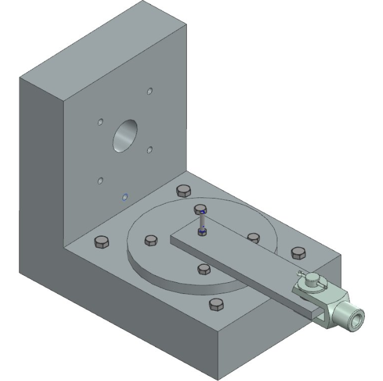

Test Bench for Bolted Joints

Context
Engineering design office project (PRBE), carried out in a team of three, aiming to imagine, design, calculate, and size a test bench for bolted assemblies subjected to transverse loads. The work included a state-of-the-art review of existing solutions, the development of several design concepts, CAD modeling and finite element simulation, and ended with a written report and an oral defense.
Skills Acquired
· Design methodology (state of the art, concept generation, solution selection)
· Mechanical sizing and engineering calculations
· Bolted joint behavior under transverse loading
· 3D CAD modeling and finite element simulation
· Technical writing and oral presentation (report and defense)
· Teamwork and project management within a 3-person team
Software Used
· 3DEXPERIENCE (CAD design and finite element simulation)
· Office package (sizing calculations, written report, oral presentation)